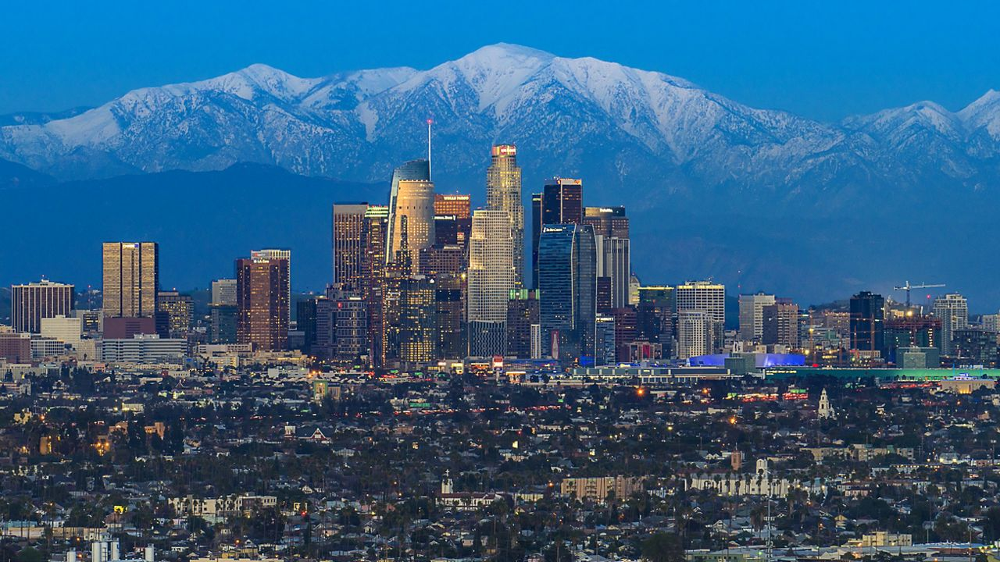

United States of America: Land of free
Duration - 7D/6N

|
Be it the vastness of the Pacific Northwest or the appeal of Appalachian Trail, the United States of America is a country of diverse landscapes, experiences, and customs.
Our West Coast USA tours allow travelers to explore the expanse of Grand Canyon in Arizona, the neon-lit iconic Las Vegas Strip, the palm-lined golden boulevards of Los Angeles, and the stunning waterfront of San Francisco. With the help of our USA tour itinerary for 7 days, spend ample time in urban sprawls for hedonistic pleasures and amidst natural landscapes to take in the coastal charm of California. |
||||||||
|
Experience the cultural diversity by visiting Native American settlements in Arizona and Nevada, hedge your bets at luxury casinos in Las Vegas, get your glad-rags on in the glitzy streets of Los Angeles, and sail past San Francisco Bay Area exploring city skyline and the Golden Gate Bridge.
Our USA holiday packages ensure that travelers have a great time while proceeding on day trips in comfortable buses or boat tours in San Francisco. Buy our cheap tour packages in USA to enjoy a trip to Grand Canyon, the largest in the world, to ride the High Roller Ferris wheel in Las Vegas, and to enjoy Universal Studios tour in Los Angeles. |

|
Highlights -
-
- Enjoy stunning panoramas from the top of Victoria Peak
- full-day Disneyland tour with thrilling rides
- Ferry ride to Macau and city tour
Itinerary -
-
Day 1 - Welcome to Las Vegas
Upon arrival at the Las Vegas Airport, meet and greet with our local tour representative at baggage claim. Check into your hotel via private transfer and get over your jet lag. Take in the unparalleled city views from the iconic Ferris wheel the High Roller at the LINQ Hotel. Enjoy the 30-minute ride in the air-conditioned cabins and admire the skyline of Las Vegas from this 550-foot tall Ferris wheel.
Indulge in the gaming, shopping, and dining experiences at this luxury casino and then return to your hotel to spend the night.
Day 2 - Grand Canyon
After breakfast at the hotel, leave for the Grand Canyon tour in the early morning. Meet at a common boarding point to hop on a Volvo bus ride to Grand Canyon tour. Enjoy ritual dances and a lovely lunch on arrival and later watch a Wild West show.
Take a guided tour of the famous Hoover Dam from the arch-shaped O'Callaghan–Pat Tillman Memorial Bridge. Proceed further through Joshua Tree National Forest and marvel at surreal geologic features narrated by the guide in the bus.
After arriving at the Grand Canyon west rim, visit the Native American settlement of Hualapai tribe and learn about their way of life. Enjoy a tribal dance performance which is subjected to availability. Admire the 360-degree views of Grand Canyon from Guano Point, one of the most dramatic viewpoints. Visit the famous Eagle Point and live a few moments on the edge at Grand Canyon Skywalk, which is a cantilever bridge with glass walkway.
In the afternoon, head to the Hualapai Ranch to witness a good-old Wild West show which is also subjected to availability.
After a full-day tour of the Grand Canyon, return to Las Vegas in the evening for overnight stay.
Day 3 - Drive to Los Angeles
After breakfast at the hotel, culminate your Las Vegas holidays by leaving on your road trip via bus to Los Angeles. Enjoy a four-hour drive through the beautiful Mojave Desert.

Upon reaching Los Angeles, check into the hotel and unwind with your group. Hit the sparkling boulevards and palm-fringed avenues of Los Angeles to take in the sights and sounds of everything that is Southern California. Return to your hotel for overnight stay.
Day 4 - Los Angeles City Tour
After breakfast at the hotel, visit Universal Studios Hollywood and DreamWorks Theatre. Experience the first-hand delight of being on a movie or a TV set where popular actors have worked. Inside the Universal Studios tour, enjoy Despicable Me Minion Mayhem and Transformers 3D rides, as well as the Wizarding World of Harry Potter attraction.
In the evening, shop and dine around town with a wide range of choices.
After an eventful day of Los Angeles city tour, return to your hotel for overnight stay.
Day 5 - Transfer to San Francisco and Boat tour
>Enjoy breakfast at the hotel in LA and check out. Hit the Pacific Coast Highway and board your bus to San Francisco. After reaching San Francisco, hop on the 60-minute Golden Gate Bay cruise as you sail past notable attractions in the city. Sail past the iconic Pier 43 in the Fisherman’s Wharf and admire the views of the skyline of San Francisco. Take the views of North Beach neighborhood and San Francisco Maritime National Park as the cruise passes along the Fort Mason and the Marina District.
Pass through the 1,260-meter span of the Golden Gate Bridge as the steam vessel heads back in the Bay Area to the legendary town of Sausalito. After sailing past Angel Island State Park and the Alcatraz Island, head back to the Pier 43. Don’t forget to spot the San Francisco-Oakland Bay Bridge and Coit Tower. Check into your hotel and spend the night in San Francisco.
Day 6 - San Francisco City Tour
After breakfast at the hotel, embark on a Hop-On Hop-off bus ride to famous landmarks in San Francisco including Golden Gate Bridge and Sausalito.
Admire the views of this orange-colored suspension bridge from the North Vista Point. Visit the Sausalito Waterfront on this one-hour guided tour to explore the Bay Area.
Spend the evening at leisure as per our San Francisco tour itinerary. After a wonderful day of San Francisco city tour, return to the hotel for overnight stay.
Day 7 - End of USA Trip
After breakfast, check out of the hotel in San Francisco. Indulge in some last-minute shopping or sightseeing as per your departure schedule.
You will be dropped at the San Fran Airport to catch your flight to the onward destination as this USA tour for 7 days wraps up today. Inclusion -
Exclusion -
-
Meals which don't find their mention in the package are not included in the package.
Other personal expenses, entrance tickets, and hotel taxes (if any) will have to be borne by the travellers.